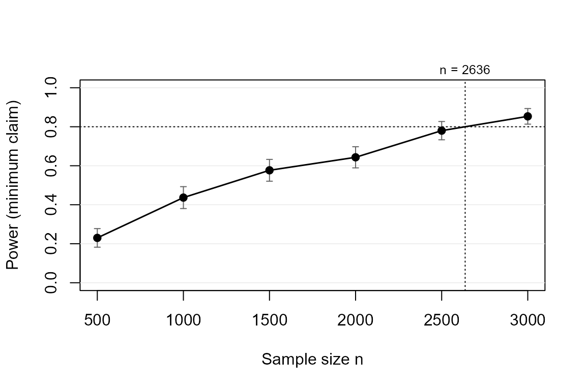

Why power for an APE at all?
In a probit or logit model, the coefficient is not the quantity anyone interprets. Applied conclusions are stated in probability points – “the treatment raises take-up by 10 percentage points” – which is the average partial effect (APE). The APE depends on all coefficients and on the covariate distribution, so power tools that work in coefficient or Cohen’s-d units cannot answer the question practitioners actually have.
powerape lets you specify the target in APE units and
simulates the whole pipeline: draw covariates, draw outcomes, fit the
model by maximum likelihood, compute the APE with a delta-method Wald
confidence interval, and evaluate a claim on that
interval (Riesthuis, 2024):
-
"minimum"– the CI lower bound exceeds the smallest effect size of interest (SESOI): the effect is meaningfully large. This is the default claim and the package’s reason to exist. -
"detect"– the CI excludes zero (directional). -
"equivalence"– the CI lies inside (-SESOI, +SESOI): the effect is too small to matter.
Step 1: describe the world
library(powerape)
d <- ape_dgp(
model = "probit",
focal = pa_var("treat", "binary", p = 0.5),
covariates = list(pa_var("age", "normal", mean = 45, sd = 12),
pa_var("female", "binary", p = 0.55)),
correlation = 0.2,
baseline = 0.30, # P(Y = 1) with treat = 0
signal = 0.15 # latent pseudo-R2 of the covariates
)The nuisance side is anchored on a friendly scale: the
baseline outcome rate and the covariates’
latent pseudo-R-squared. Explicit coefficients
(gamma), pilot data (ape_dgp_empirical()), or
a fitted pilot model (ape_dgp_from_fit()) are the expert
routes.
Step 2: pin the true APE (the inversion step)
Suppose theory or prior evidence suggests a true effect of 10 percentage points, and effects below 5 points would not justify the intervention: the planning value is 0.10 and the SESOI is 0.05.
d <- set_ape(d, target = 0.10)
d
#> powerape DGP -- probit
#> focal: treat (binary, p = 0.50)
#> covariates: age (normal, mean 45.00, sd 12.00), female (binary, p = 0.55)
#> baseline P(Y=1 | reference) = 0.300, nuisance signal (latent pseudo-R2) = 0.150
#> true APE pinned at +0.1000 (beta_focal = 0.2943, implied P(Y=1 | focal=1) = 0.400)set_ape() solves for the focal coefficient that makes
the true APE exactly 0.10 given everything else, and errors
informatively if the target is infeasible (an APE of +0.40 cannot exist
at a baseline rate of 0.85).
Step 3: power for the claim
ape_power(d, n = 1500, claim = "minimum", sesoi = 0.05,
nsim = 500, seed = 1)
#> powerape -- minimum-effect claim (CI lower bound > 0.050)
#> probit, n = 1500, assumed true APE +0.1000, 95% CI, nsim = 500
#> power = 0.562 (MCSE 0.022)
#> outcomes: minimum 0.562 | detect-only 0.430 | inconclusive 0.008 | equivalence 0.000 | failed 0.000Read the outcome distribution, not just the power number: some studies would reject zero yet remain unable to claim the effect clears the SESOI (“detect-only”) – exactly the inconclusiveness Riesthuis (2024) warns about.
Step 4: required sample size and the power curve
ape_n(d, power = 0.80, claim = "minimum", sesoi = 0.05,
nsim = 500, seed = 2)
#> powerape required sample size -- minimum claim
#> n = 2673 for 80% target power (confirmed 0.799, MCSE 0.009)
#> assumed true APE +0.1000, sesoi 0.050, 95% CI, probit
#> search: 1 step(s); confirmed in 1 round(s) at nsim = 2000.
cv <- ape_curve(d, n = seq(500, 3000, by = 500), claim = "minimum",
sesoi = 0.05, nsim = 300, seed = 3)
plot(cv, target_power = 0.80)
Step 5: how fragile is this to the contextual guesses?
The baseline rate and the covariate signal are guesses, and power
computed from a single guess is fragile (Hancock & Feng, 2025).
ape_robust() re-runs the analysis over a scenario grid and
reports the worst case; with nmax = TRUE it also finds
n_max, the insurance-premium sample size that holds the
target power in the worst scenario.
ape_robust(d, n = 2200, claim = "minimum", sesoi = 0.05,
vary = list(baseline = c(0.20, 0.40)), grid_points = 3,
nsim = 300, seed = 4, nmax = FALSE)
#> powerape robustness sweep -- minimum claim, APE, pin = ape
#> n = 2200, nsim = 300 per scenario, 3 scenario(s) over: baseline
#> power range [0.687, 0.773]; worst scenario:
#> baseline implied_effect power mcse
#> 0.4 0.1 0.6866667 0.02678031
#> scenarios:
#> baseline implied_effect power mcse
#> 0.2 0.1 0.7733333 0.02417222
#> 0.3 0.1 0.7333333 0.02553139
#> 0.4 0.1 0.6866667 0.02678031By default the APE is re-pinned in every scenario
(pin = "ape"), so only the precision channel varies;
pin = "coefficients" instead holds the coefficients and
lets the implied effect drift.
Step 6: the citable paragraph
pw <- ape_power(d, n = 2200, claim = "minimum", sesoi = 0.05,
nsim = 500, seed = 5)
power_statement(pw)
#> We conducted a simulation-based power analysis for the average partial effect
#> (APE) of treat using the powerape package (version 1.3.0), following the
#> confidence-interval approach of Riesthuis (2024). The assumed data-generating
#> process was a probit model with focal variable treat (binary, prevalence
#> 0.50); parametric covariates (age, female; Gaussian-copula dependence);
#> baseline outcome rate 0.300 with the focal at reference; nuisance covariates
#> contribute a latent pseudo-R-squared of 0.15. The assumed true APE was 0.100
#> (10.0 percentage points). At a sample size of n = 2200, simulated power for
#> the minimum-effect claim (the 95% confidence interval's lower bound exceeding
#> the smallest effect size of interest, 0.050) was 0.710 (Monte Carlo SE 0.020;
#> 500 replications). Across replications, the probability of concluding a
#> meaningful effect was 0.710, of detection without meaningfulness 0.290, of an
#> inconclusive result 0.000, and of equivalence 0.000. Estimation used maximum
#> likelihood with delta-method Wald confidence intervals; replications that
#> failed to converge (0.0%) counted against the claim.References
- Hancock, G. R., & Feng, Y. (2025). nmax and the quest to restore caution, integrity, and practicality to the sample size planning process. Psychological Methods.
- Riesthuis, P. (2024). Simulation-based power analyses for the smallest effect size of interest: A confidence-interval approach for minimum-effect and equivalence testing. AMPPS, 7(2).